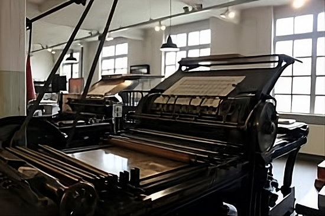

Mesgana Printing Press and Packaging was established in 2001 E.C and over the past 17 years it has grown into a well experienced company in Ethiopia’s manufacturing and service sector. What started as a small business has now developed into a more specialized and organized industrial company.
At first, the company was based in Piyasa but as the business grew and demand increased it expanded its locations. Currently the company works from two main locations. The factory is found around Addisu Gebaya, near Jumbo Building where all the heavy production and technical activities take place. The administrative office is located in kechene, mainly focusing on managing clients and handling office work.
Mesgana mainly focuses on two major areas: packaging and printing. In the packaging division the company provides different types of packaging solutions For example they produce pharmaceutical packaging which requires high precision and safety standards. They also create food packaging materials that help keep products fresh while also making them attractive to customers. In addition to that they design custom packaging based on what each client needs including different sizes and shapes of boxes.
On the printing side Mesgana offers a variety of printing services used for both marketing and general purposes. They produce materials like flyers, brochures, and banners, which are commonly used for promotion. They also provide other printing services including large format and paper based printing depending on customer needs.